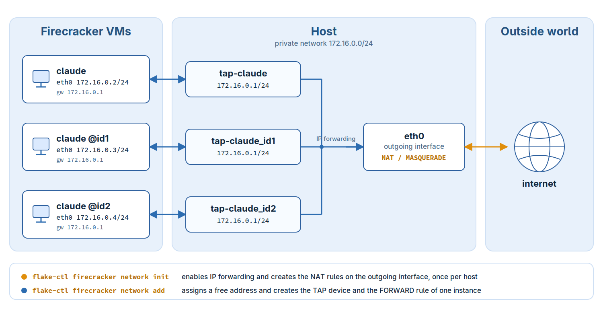

6. Firecracker Networking
Hint
Abstract
This chapter explains how a Firecracker VM application is connected to the outside world, which commands create and delete that setup and how the result looks in the flake configuration.
Firecracker connects a virtual machine to the outside world through a
TUN/TAP device only. Such a device is a host local endpoint and
provides no connection beyond the host by itself. Routing its traffic
further is the task of the host. flake-pilot implements this as a
NAT based setup with statically assigned addresses. It is created and
deleted with the flake-ctl firecracker network commands, no
manual setup is needed.
The setup works within the following requirements:
initrd_pathmust be set in the flake configuration.The used initrd has to provide support for
systemd-(networkd, resolved)and must have been created bydracutsuch that the passedboot_argsin the flake setup will become effective.
6.1. The Concept
All VM applications of a host live in one private network which does not exist outside of that host:
Private network:
172.16.0.0/24if the host allows it, see belowGateway, the host side of the network: the first address of that network, e.g
172.16.0.1Netmask:
255.255.255.0Name server:
8.8.8.8Name of the network interface in the guest:
eth0
The private network is selected when the host is prepared with
flake-ctl firecracker network init. The preferred network is
172.16.0.0/24. If the host is connected to a network which
overlaps with it, the next free /24 network of the private
address space is taken instead, in the order 172.16.0.0 to
172.31.255.0, 192.168.0.0 to 192.168.255.0 and
10.0.0.0 to 10.255.255.0. The networks of the host are read
from the addresses of its interfaces and from its routing table, the
TAP devices of the flakes are left out.
The selected network is recorded along with the outgoing interface
and a recorded network is kept as long as the host does not use it.
Thus all applications of a host share the same network and the
network stays the same across reboots. Only if the recorded network
collides with a network of the host, e.g because the host was
connected to it afterwards, init selects another one. The
applications then have to be connected again to receive an address of
the new network.
The other values are compiled into flake-ctl and are not
configurable. Only the address of an application is variable. It is
assigned once, when the application is connected, and is written to
its flake configuration. Therefore an application keeps its address
across calls and across reboots of the host until it is disconnected
again. The address handed out is the lowest one of the private
network which is not used by another flake registration, addresses of
applications which were disconnected are handed out again.
Every instance of an application has its own address and its own TAP
device. The host side of each TAP device carries the gateway address,
the guest side is configured by the kernel of the VM from the ip=
option on its commandline. No DHCP server is involved:

The traffic of an instance takes the following path:
The kernel of the VM configures
eth0statically from its commandline and routes everything to the gateway172.16.0.1, which is the host side of the TAP device the instance is connected toIP forwarding on the host passes the packet from the TAP device on to the outgoing interface. One
FORWARDrule per TAP device allows thisThe NAT rule of the outgoing interface rewrites the sender address to the address of that interface. On the network of the host the traffic of the instance appears as if it would originate from the host itself
The answers are recognized by connection tracking and are routed back to the TAP device the connection came from. As all TAP devices carry the same gateway address, and with it the same route to the private network, a host route of the form
172.16.0.3/32 dev tap-claude_id1per instance makes sure the packets are delivered to the device the instance is connected to
Note
The instances share the private network but they are not connected to each other. There is no route between two TAP devices, the only peer of an instance is the host.
Note
Only the address in the flake configuration is persistent. IP forwarding, the netfilter rules and the TAP devices are runtime state of the host, after a reboot they have to be created again.
6.2. The Commands
6.2.1. Prepare the Host
flake-ctl firecracker network init --outgoing-interface eth0
Selects the private network of the VMs, enables IP forwarding and creates the NAT rules on the given interface, the one the traffic of the VMs leaves the host through. This is done once per host, and again after a reboot, not once per application. Network and interface are recorded such that the following commands use the same network and know where to route the traffic to.
Warning
Please check which tool is managing the firewall on your host and refer to its documentation on how to set up the NAT/postrouting rules. The command assumes there is no other firewall software active on your host and serves only as an example setup!
6.2.2. Connect an Application
flake-ctl firecracker network add --app $HOME/bin/claude
Assigns a free address to the application, writes the network setup to its flake configuration, creates its TAP device, connects that device to the outgoing interface and routes the address of the application to it.
As every instance needs its own address and its own TAP device, the command has to be called for each selector the application is called with:
flake-ctl firecracker network add --app $HOME/bin/claude --instance @id1
6.2.3. Disconnect an Application
flake-ctl firecracker network remove --app $HOME/bin/claude
Deletes the TAP device, its forwarding rule and the network setup in
the flake configuration. The address becomes free for another
application. Called with --instance only the setup of that
instance is deleted. The host setup of the init command is shared
by all applications and stays in place.
Note
The application is left without an ip= option, which is the
same state a fresh registration creates. If
the VM should fall back to a dynamic setup, ip=dhcp has to be
added to its boot_args by hand.
All commands change the network configuration of the host and
therefore call the required ip and iptables commands through
sudo. They can be called more than once: a device, a route or a
rule which is already there is not created twice, and one which is
gone is not deleted again. After a reboot of the host, calling init and
add again restores the setup with the same addresses.
6.3. The Result in the Flake Configuration
The flake configuration for the registered claude app from
Claude AI as a Firecracker VM App can be found at:
vi ~/.config/flakes/claude.yaml
Connecting the app and its instances leads to the following network
related settings. The addresses are the ones of the preferred
network, on a host which uses 172.16.0.0/24 already the
addresses of the selected network show up instead:
vm:
runtime:
firecracker:
boot_args:
- ip=172.16.0.2::172.16.0.1:255.255.255.0::eth0:off
- rd.route=172.16.0.1/24::eth0
- nameserver=8.8.8.8
instance:
"@id1":
boot_args:
- ip=172.16.0.3::172.16.0.1:255.255.255.0::eth0:off
"@id2":
boot_args:
- ip=172.16.0.4::172.16.0.1:255.255.255.0::eth0:off
With this setup claude boots with the static IP 172.16.0.2,
claude @id1 with 172.16.0.3 and claude @id2 with 172.16.0.4.
For further information about the network setup options, refer to
man dracut.cmdline and look up the section about ip=.
The instance settings do not replace the global boot_args but are
merged into them: an option which is also set in the instance
section takes the place of the global setting of the same option,
options which are not set globally are appended. In the example above
only the ip= option is exchanged, rd.route= and
nameserver= stay in effect for all instances.
Note
The @ character is reserved in YAML, therefore the key has to
be quoted. For convenience the plain name without the @
prefix, e.g id1, is accepted as a key as well. Run the app
with PILOT_DEBUG=1 to see whether an instance section was
found and which kernel commandline it produced.
Note
The kernel only accepts interface names shorter than 16 characters
which do not contain /, : or whitespace. Thus the TAP
device name is built by replacing all characters outside of
[A-Za-z0-9_] by _ and by shortening names that are too
long. A shortened name keeps the first characters of the app name
and is made unique again by a hash suffix, e.g the app
some-very-long-application-name uses the TAP device
tap-some_bbb9de. Run the app with PILOT_DEBUG=1 to see the
TAP device name it expects.